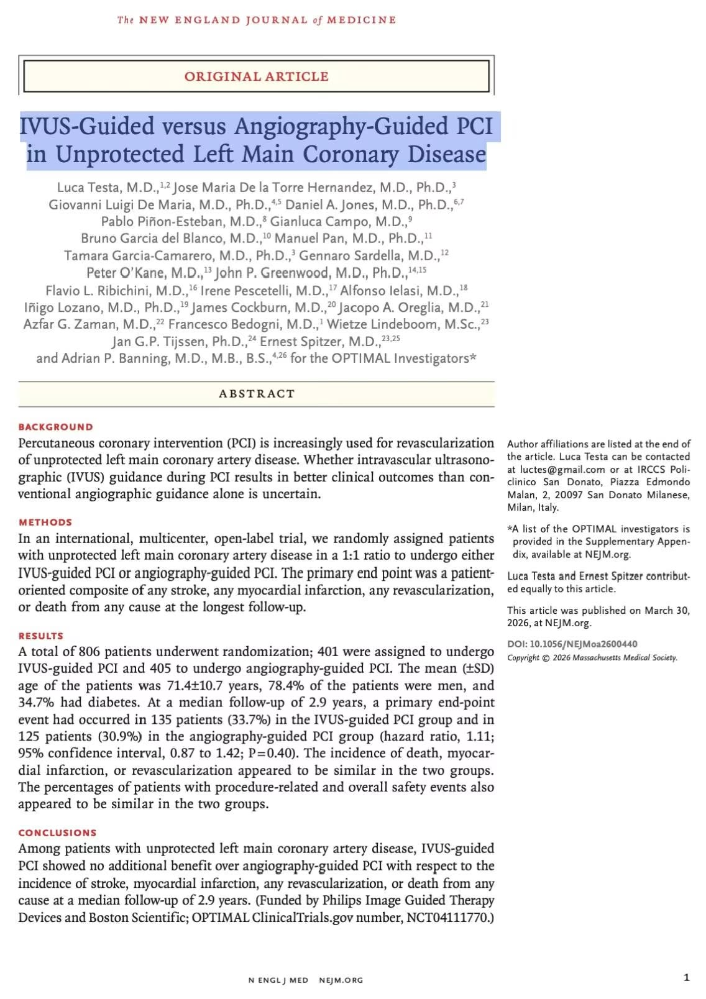

Use of IVUS to more precisely place stents and do angioplasty does not improve outcomes compared to traditional angiography.
#stentsHD #ivusHD #angioplastyHD #angiographyHD
🧠 We optimized the stent. We forgot the disease.
Two major NEJM trials just dropped.
Both asked the same question:
👉 Does IVUS-guided PCI improve outcomes vs angiography alone?
The answer?
❌ No.
📊 Trial #1 – Complex High-Risk PCI (IVUS-CHIP)
IVUS: 13.9% events
Angio: 11.1% events
HR 1.25 → trending worse
📊 Trial #2 – Left Main PCI (OPTIMAL)
IVUS: 33.7% events
Angio: 30.9% events
HR 1.11 → no difference
Let’s be honest.
💡 IVUS did exactly what it’s supposed to do:
✔️ Better sizing
✔️ More post-dilation
✔️ More “optimized” stents
And yet…
👉 No clinical benefit.
⚠️ This is the uncomfortable truth:
We’ve been chasing procedural perfection,
thinking it would translate into patient outcomes.
It doesn’t
(and yes I know the comparator is highly skilled PCI operators/centers; but does this appears as inclusion criteria?)
Because events are NOT driven by:
❌ stent expansion
❌ lumen gain
❌ apposition metrics
They are driven by:
🔥 plaque biology
🔥 disease burden
🔥 patient-level risk
Even more interesting:
👉 The “inferior” arm (angiography) was already excellent
👉 Modern PCI is already optimized
👉 There’s very little left to gain mechanically
💥 So what did these trials really show?
Not that IVUS is useless.
But that:
👉 The paradigm is wrong.
🧬 We are:
✔️ optimizing millimeters
✔️ while events come from microns of biology
🚨 The future is NOT:
“optimize the stent more”
It is:
👉 identify disease earlier
👉 quantify plaque, not stenosis
👉 treat-to-plaque, not treat-the-lumen
💬 Final thought:
We spent 20 years perfecting PCI.
And almost none of that effort touched the disease that actually kills patients.
#Cardiology #PCI #IVUS #CardiacImaging #PhotonCountingCT #PreventiveCardiology #TreatToPlaque

